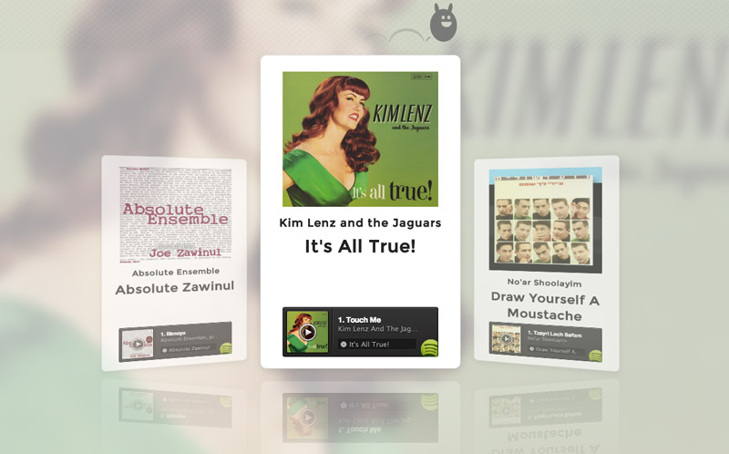
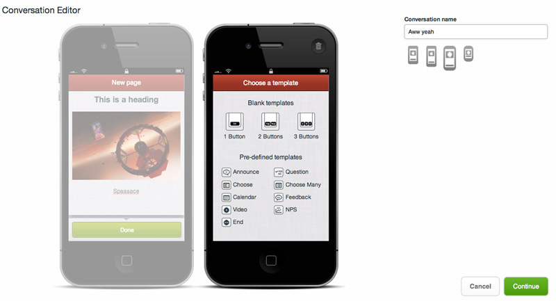

Boop!
welcome to
DUBLIN JS CSS
IMPROVING WEBSITE UI WITH
CSS ANIMATIONS
This talk: hop.ie/go/css
About me

Animation
- Conveying information
- Adding character / branding
- Affording interaction
- Implementing with CSS
CSS
- Visual layouts
- Incomplete browser support
- New features:
- Transitions, Keyframes, Canvas and more
JavaScript
- Functionality
- Good browser support
- Frameworks
JavaScript example
$('#js-button').hover(
function(e) {
$(e.target).animate({
padding: '30px 50px',
backgroundColor: 'red'
}, 500);
},
function(e) {
$(e.target).animate({
padding: '12px 20px',
backgroundColor: 'green'
}, 500);
});
Section 1
Boop!
Section 2
Beep!
$("#accordion").accordion();
CSS example
#css-button {
background-color: green;
padding: 12px 20px;
transition: all 500ms;
}
#css-button:hover {
background-color: red;
padding: 30px 50px;
transition: all 500ms;
}
Section 1
Section 2
Beep!
#css-accordion div.content {
height: 0;
opacity: 0;
transition: all 500ms;
}
#css-accordion .item.active div.content {
height: 60px;
opacity: 1;
transition: all 500ms;
}
Transitions

Multiple transitions
No transitions
* no transitions
Transitions
* not yet... soon
.download-button.transition
@include transition(all, 500ms)
span
&.container
img
@include transition(all, 500ms)
.text
@include transition(all, 500ms)
&.beer img
@include transition(all, 500ms)
Transitions
- Various CSS styles:
- Shape / size / colour
- Translate3D / Opacity
- Easing
3D Transitions
C
S
S
HTML
<div class="cards" style="clear: both">
<div class="card one">
<div class="front"></div>
<div class="back"><h3>C</h3></div>
</div>
<div class="card two">
<div class="front"></div>
<div class="back"><h3>S</h3></div>
</div>
<div class="card three">
<div class="front"></div>
<div class="back"><h3>S</h3></div>
</div>
</div>
SASS (+ Compass)
.card
width: 260px
height: 340px
margin: 0 20px 0 !important
float: left
position: relative
@include perspective(800px)
color: #fff
text-align: center
@include transform(translate(0, 0) scale(0.8))
@include transition(all 500ms ease-in-out)
.front
width: 100%
height: 100%
position: absolute
background: url(/talks/css-animation/images/telefonica.jpg) no-repeat
@include border-radius(35px)
@include transition(all 500ms ease-in-out)
@include transform-style(preserve-3d)
@include backface-visibility(hidden)
@include box-shadow(0 0 20px #6f7e85)
h3
color: #fff
padding-top: 80px
font-size: 72px
@include text-shadow(0 -1px #3b4c54)
&.two .front
background-position: -280px 0
&.three .front
background-position: -560px 0
.back
width: 100%
height: 100%
background: #2b4546 url(/talks/css-animation/images/escheresque_ste.png)
@include border-radius(35px)
@include transition(all 500ms ease-in-out)
@include transform-style(preserve-3d)
@include transform(rotateY(180deg))
@include backface-visibility(hidden)
@include box-shadow(0 0 20px #6f7e85)
h3
color: #fff
padding-top: 80px
font-size: 120px
@include text-shadow(0 -1px #3b4c54)
&:hover
@include transform(translate(0, -20px) scale(1))
.front
@include transform(rotateY(180deg))
.back
@include transform(rotateY(360deg))
@include box-shadow(10px 20px 30px #6f7e85)
Keyframes

Character
@keyframes move-bouncer {
0% {
height: 80px;
border-radius: 50px / 40px;
top: 100px;
}
44%, 60% {
top: 0;
height: 120px;
border-radius: 50px / 60px;
}
100% {
height: 80px;
border-radius: 50px / 40px;
top: 100px;
}
}
Performance
D
U
B
L
I
N
J
S
JS
D
U
B
L
I
N
J
S
CSS
Example 1
Example 2
CSS offers:
- Hardware acceleration
- Built in functionality: Transitions / Keyframes
- Better separation of display and function code
SASS / Less / Stylus
A button
SASS
display: block
width: 250px
margin: 0 auto
color: #fff
background-color: #9f8
@include background(linear-gradient(#9f8, #5a6))
border: 10px solid #ccffcc
@include border-radius(30px)
padding: 20px
CSS
display: block;
width: 250px;
margin: 0 auto;
color: white;
background-color: #99ff88;
background: -webkit-gradient(linear, 50% 0%, 50% 100%, color-stop(0%, #99ff88), color-stop(100%, #55aa66));
background: -webkit-linear-gradient(#99ff88, #55aa66);
background: -moz-linear-gradient(#99ff88, #55aa66);
background: -o-linear-gradient(#99ff88, #55aa66);
background: linear-gradient(#99ff88, #55aa66);
border: 10px solid #ccffcc;
-webkit-border-radius: 30px;
-moz-border-radius: 30px;
-ms-border-radius: 30px;
-o-border-radius: 30px;
border-radius: 30px;
padding: 20px;
Compatibility
- Support is improving!
- Use prefixes
- For everything else, there's Modernizr
Summary
- Smoother animations
- Less visual code in your JS
- CSS getting more feature-rich
- Crazy fun!
Further reading
Next week...
MMUG Dublin: Introduction to Node.js
New Horizons Ireland
22 – 24 Strand Street Great, Dublin 1
7:30pm
Limited space. RSVP on their Meetup page
THANKS
- Twitter: donovanh
- Blog: hop.ie
- This talk: hop.ie/go/css